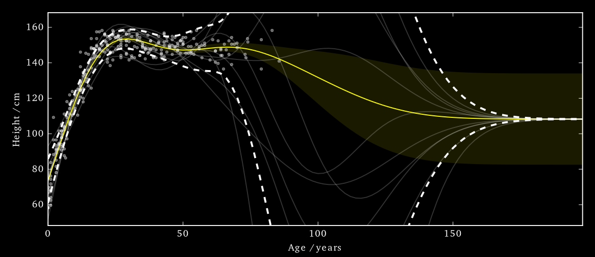
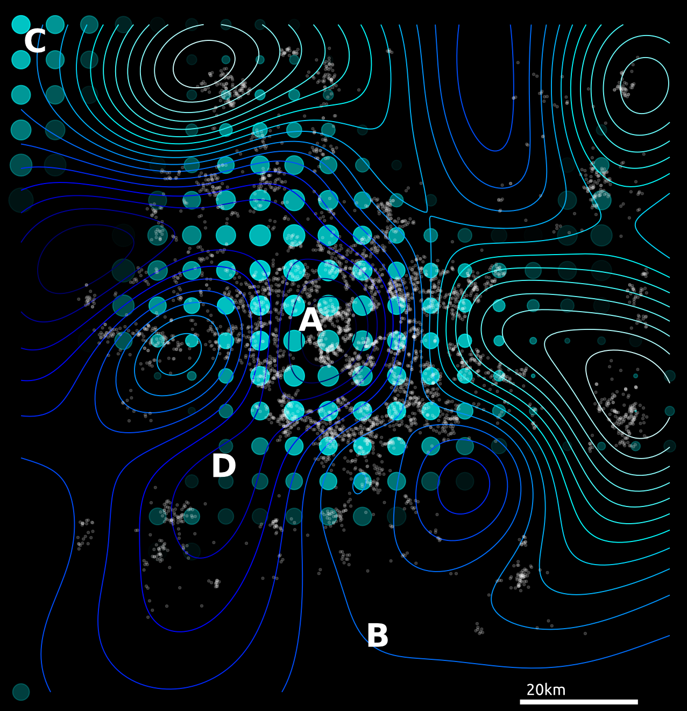
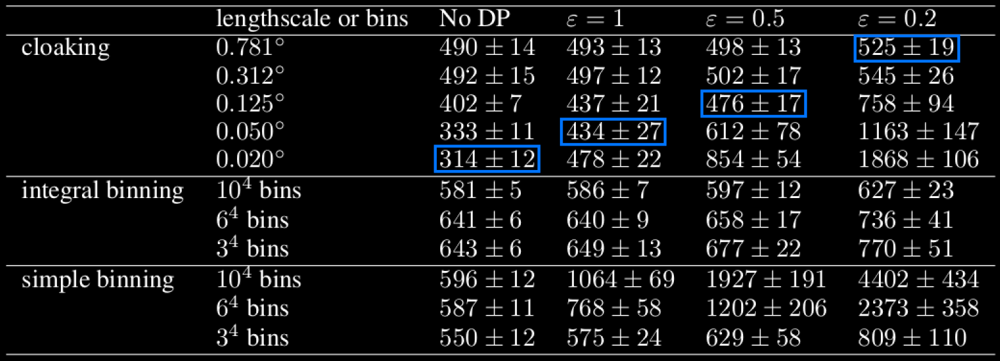
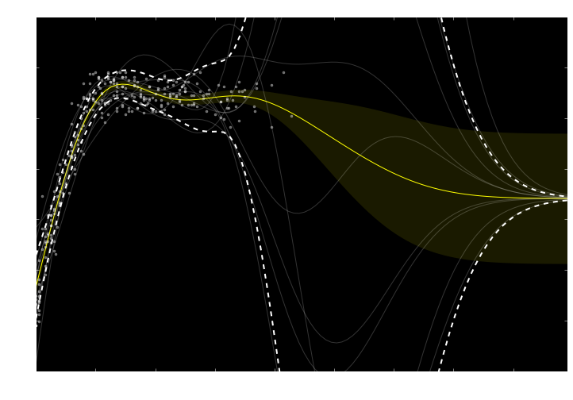
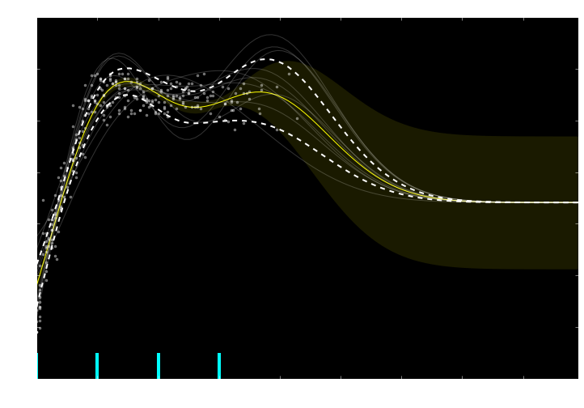
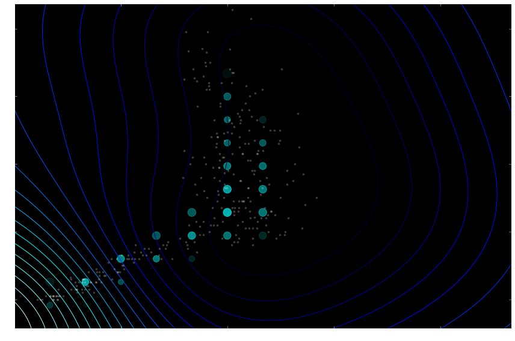
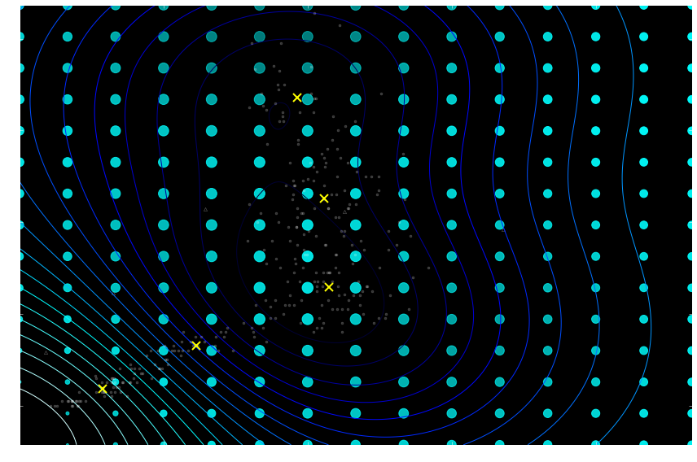

Personalized Health: Challenges in Data Science
Neil D. Lawrence
There are three types of lies: lies, damned lies and statistics
??
There are three types of lies: lies, damned lies and statistics
Benjamin Disraeli
There are three types of lies: lies, damned lies and statistics
Benjamin Disraeli 1804-1881
Mathematical Statistics
- ‘Founded’ by Karl Pearson (1857-1936)

There are three types of lies: lies, damned lies and ‘big data’
Neil Lawrence 1972-?
‘Mathematical Data Science’
- ‘Founded’ by ? (?-?)

Background: Big Data
The pervasiveness of data brings forward particular challenges.
Those challenges are most sharply in focus for personalized health.
Particular opportunities, in challenging areas such as mental health.
Evolved Relationship
Evolved Relationship
Evolved Relationship
“Embodiment Factors”

|

|
|
| compute | ~10 gigaflops | ~ 1000 teraflops? |
| communicate | ~1 gigbit/s | ~ 100 bit/s |
embodiment (compute/communicate) |
10 | ~ 1013 |
Evolved Relationship
Effects
This phenomenon has already revolutionised biology.
Large scale data acquisition and distribution.
Transcriptomics, genomics, epigenomics, ‘rich phenomics’.
Great promise for personalized health.
Societal Effects
Automated decision making within the computer based only on the data.
A requirement to better understand our own subjective biases to ensure that the human to computer interface formulates the correct conclusions from the data.
Particularly important where treatments are being prescribed.
But what is a treatment in the modern era: interventions could be far more subtle.
Societal Effects
Shift in dynamic from the direct pathway between human and data to indirect pathway between human and data via the computer
This change of dynamics gives us the modern and emerging domain of data science
Challenges
Paradoxes of the Data Society
Quantifying the Value of Data
Privacy, loss of control, marginalization
Breadth vs Depth Paradox
Able to quantify to a greater and greater degree the actions of individuals
But less able to characterize society
As we measure more, we understand less
What?
Perhaps greater preponderance of data is making society itself more complex
Therefore traditional approaches to measurement are failing
Curate’s egg of a society: it is only ‘measured in parts’
Wood or Tree
- Can either see a wood or a tree.

Examples
Election polls (UK 2015 elections, EU referendum, US 2016 elections)
Clinical trials vs personalized medicine: Obtaining statistical power where interventions are subtle. e.g. social media
Also need
- More classical statistics!
- Like the ‘paperless office’
A better characterization of human (see later)
- Larger studies (100,000 genome)
- Combined with complex models: algorithmic challenges
Quantifying the Value of Data
There’s a sea of data, but most of it is undrinkable

We require data-desalination before it can be consumed!
Data
- 90% of our time is spent on validation and integration (Leo Anthony Celi)
- “The Dirty Work We Don’t Want to Think About” (Eric Xing)
- “Voodoo to get it decompressed” (Francisco Giminez?)
- In health care clinicians collect the data and often control the direction of research through guardianship of data.
Value
- How do we measure value in the data economy?
- How do we encourage data workers: curation and management
- Incentivization for sharing and production.
- Quantifying the value in the contribution of each actor.
Credit Allocation
Direct work on data generates an enormous amount of ‘value’ in the data economy but this is unaccounted in the economy
Hard because data is difficult to ‘embody’
Value of shared data: Wellcome Trust 2010 Joint Statement (from the “Foggy Bottom” meeting)
Solutions
Encourage greater interaction between application domains and data scientists
Encourage visualization of data
Adoption of ‘data readiness levels’
Implications for incentivization schemes
Privacy, Loss of Control and Marginalization
Society is becoming harder to monitor
Individual is becoming easier to monitor
Conversation
Conversation
Conversation
Modelling
Modelling
Hate Speech or Political Dissent?
- social media monitoring for ‘hate speech’ can be easily turned to political dissent monitoring
Marketing
- can become more sinister when the target of the marketing is well understood and the (digital) environment of the target is also so well controlled
Free Will
- What does it mean if a computer can predict our individual behavior better than we ourselves can?
Discrimination
Potential for explicit and implicit discrimination on the basis of race, religion, sexuality, health status
All prohibited under European law, but can pass unawares, or be implicit
GDPR: General Data Protection Regulation
Discrimination
Potential for explicit and implicit discrimination on the basis of race, religion, sexuality, health status
All prohibited under European law, but can pass unawares, or be implicit
GDPR: Good Data Practice Rules
Marginalization
- Credit scoring, insurance, medical treatment
- What if certain sectors of society are under-represented in our aanalysis?
- What if Silicon Valley develops everything for us?
Digital Revolution and Inequality?

Amelioration
- Work to ensure individual retains control of their own data
- We accept privacy in our real lives, need to accept it in our digital
- Control of persona and ability to project
- Need better technological solutions: trust and algorithms.
Key Object
Covariance function, \(\mathbf{K}\)
Determines properties of samples.
Function of \({\bf X}\), \[k_{i,j} = k({\bf x}_i, {\bf x}_j)\]
Linear Algebra
Posterior mean
\[f_D({\bf x}_*) = \mathbf{k}({\bf x}_*, {\bf X}) \mathbf{K}^{-1} \mathbf{y}\]
Posterior covariance \[\mathbf{C}_* = \mathbf{K}_{*,*} - \mathbf{K}_{*,\mathbf{f}} \mathbf{K}^{-1} \mathbf{K}_{\mathbf{f}, *}\]
Linear Algebra
Posterior mean
\[f_D({\bf x}_*) = \mathbf{k}({\bf x}_*, {\bf X}) \boldsymbol{\alpha}\]
Posterior covariance \[\mathbf{C}_* = \mathbf{K}_{*,*} - \mathbf{K}_{*,\mathbf{f}} \mathbf{K}^{-1} \mathbf{K}_{\mathbf{f}, *}\]
Differential Privacy, summary
We want to protect a user from a linkage attack…
…while still performing inference over the whole group.
Making a dataset private is more than just erasing names.
To achieve a level of privacy one needs to add randomness to the data.
This is a fundamental feature of differential privacy.
See The Algorithmic Foundations of Differential Privacy by Dwork and Roth for a rigorous introduction to the framework.
Differential Privacy for Gaussian Processes
We have a dataset in which the inputs, \(\mathbf{X}\), are public. The outputs, \(\mathbf{y}\), we want to keep private.

Data consists of the heights and weights of 287 women from a census of the !Kung
Vectors and Functions
Hall et al. (2013) showed that one can ensure that a version of \(f\), function \(\tilde{f}\) is \((\varepsilon, \delta)\)-differentially private by adding a scaled sample from a GP prior.

3 pages of maths ahead!
Applied to Gaussian Processes
We applied this method to the GP posterior.
The covariance of the posterior only depends on the inputs, \(X\). So we can compute this without applying DP.
The mean function, \(f_D(\mathbf{x_*})\), does depend on \(\mathbf{y}\). \[f_D(\mathbf{x_*}) = \mathbf{k}(x_*, \mathbf{X}) \mathbf{K}^{-1} \mathbf{y}\]
We are interested in finding
\[|| f_D(\mathbf{x_*}) - f_{D^\prime}(\mathbf{x_*}) ||_H^2\]
…how much the mean function (in RKHS) can change due to a change in \(\mathbf{y}\).
Applied to Gaussian Processes
Using the representer theorem, we can write \[|| f_D(\mathbf{x_*}) - f_{D^\prime}(\mathbf{x_*}) ||_H^2\]
as:
\[\Big|\Big|\sum_{i=1}^n k(\mathbf{x_*},\mathbf{x}_i) \left(\alpha_i - \alpha^\prime_i\right)\Big|\Big|_H^2\]
where \(\boldsymbol{\alpha} - \boldsymbol{\alpha}^\prime = \mathbf{K}^{-1} \left(\mathbf{y} - \mathbf{y}^\prime \right)\)
L2 Norm
\[\Big|\Big|\sum_{i=1}^n k(\mathbf{x_*},\mathbf{x}_i) \left(\alpha_i - \alpha^\prime_i\right)\Big|\Big|_H^2\]
where \(\boldsymbol{\alpha} - \boldsymbol{\alpha}^\prime = \mathbf{K}^{-1} \left(\mathbf{y} - \mathbf{y}^\prime \right)\)
We constrain the kernel: \(-1\leq k(\cdot,\cdot) \leq 1\) and we only allow one element of \(\mathbf{y}\) and \(\mathbf{y}'\) to differ (by at most \(d\)).
So only one column of \(\mathbf{K}^{-1}\) will be involved in the change of mean (which we are summing over).
The distance above can then be shown to be no greater than \(d\;||\mathbf{K}^{-1}||_\infty\)
Applied to Gaussian Processes
This ‘works’ in that it allows DP predictions…but to avoid too much noise, the value of \(\varepsilon\) is too large (here it is 100)

EQ kernel, \(\ell = 25\) years, \(\Delta=100\)cm
Inducing Inputs
Using sparse methods (i.e. inducing inputs) can help reduce the sensitivity a little. We’ll see more on this later.

Cloaking
So far we’ve made the whole posterior mean function private…
…what if we just concentrate on making particular predictions private?
Effect of perturbation
Standard approach: sample the noise is from the GP’s prior.
Not necessarily the most ‘efficient’ covariance to use.
Cloaking
Left: Function change. Right: test point change
Cloaking
Left: Function change. Right: test point change
Cloaking
Left: Function change. Right: test point change
Cloaking
Left: Function change. Right: test point change
Cloaking
Left: Function change. Right: test point change
Cloaking
Left: Function change. Right: test point change
DP Vectors
Hall et al. (2013) also presented a bound on vectors.
Find a bound (\(\Delta\)) on the scale of the output change, in term of its Mahalanobis distance (wrt the added noise covariance).
\[\sup_{D \sim {D'}} ||\mathbf{M}^{-1/2} (\mathbf{y}_* - \mathbf{y}_{*}')||_2 \leq \Delta\]
We use this to scale the noise we add:
\[\frac{\text{c}(\delta)\Delta}{\varepsilon} \mathcal{N}_d(0,\mathbf{M})\]
We get to pick \(\mathbf{M}\)
Cloaking
Intuitively we want to construct \(\mathbf{M}\) so that it has greatest covariance in those directions most affected by changes in training points, so that it will be most able to mask those changes.
The change in posterior mean predictions is,
\[\mathbf{y}_* - \mathbf{y}'_* = \mathbf{K}_{*f} \mathbf{K}^{-1} (\mathbf{y}-\mathbf{y}')\]
Effect of perturbing each training point on each test point is represented in the cloaking matrix,
\[\mathbf{C} = \mathbf{K}_{*f} \mathbf{K}^{-1}\]
Cloaking
We assume we are protecting only one training input’s change, by at most \(d\).
So \(\mathbf{y}-\mathbf{y}'\) will be all zeros except for one element, \(i\).
So the change in test points will be (at most)
\[\mathbf{y}_*' - \mathbf{y}_* = d \mathbf{C}_{:i}\]
We’re able to write the earlier bound as,
\[d^2 \sup_{i} \mathbf{c}_i^\top \mathbf{M}^{-1} \mathbf{c}_i \leq\Delta\]
where \(\mathbf{c}_i \triangleq \mathbf{C}_{:i}\)
Cloaking
Dealing with \(d\) elsewhere and setting \(\Delta = 1\) (thus \(0 \leq \mathbf{c}_i^\top \mathbf{M}^{-1} \mathbf{c}_i \leq 1\)) and minimise \(\log |\mathbf{M}|\) (minimises the partial entropy).
Using Lagrange multipliers and gradient descent, we find
\[\mathbf{M} = \sum_i{\lambda_i \mathbf{c}_i \mathbf{c}_i^\top}\]
Cloaking: Results
The noise added by this method is now practical.

EQ kernel, \(l = 25\) years, \(\Delta=100\)cm, \(\varepsilon=1\)
Cloaking: Results
It also has some interesting features;
- Less noise where data is concentrated
- Least noise far from any data
- Most noise just outside data
Cloaking: Results
House Prices Around London

Citibike
Tested on 4D citibike dataset (predicting journey durations from start/finish station locations).
The method appears to achieve lower noise than binning alternatives (for reasonable \(\varepsilon\)).
Citibike
 lengthscale in degrees, values above, journey duration (in seconds)
Cloaking and Inducing Inputs
Outliers poorly predicted.
Too much noise around data ‘edges’.
Use inducing inputs to reduce the sensitivity to these outliers.
Cloaking (no) Inducing Inputs

Cloaking and Inducing Inputs

Results
For 1D !Kung, RMSE improved from \(15.0 \pm 2.0 \text{cm}\) to \(11.1 \pm 0.8 \text{cm}\)
Use Age and Weight to predict Height
For 2D !Kung, RMSE improved from \(22.8 \pm 1.9 \text{cm}\) to \(8.8 \pm 0.6 \text{cm}\)
Note that the uncertainty across cross-validation runs smaller. 2D version benefits from data’s 1D manifold.
Cloaking (no) Inducing Inputs

Cloaking and Inducing Inputs

Awareness
- Need to increase awareness of the pitfalls among researchers
- Need to ensure that technological solutions are being delivered not merely for few (#FirstWorldProblems)
- Address a wider set of challenges that the greater part of the world’s population is facing
Conclusion
- Data science offers a great deal of promise for personalized health
- There are challenges and pitfalls
- It is incumbent on us to avoid them
- Need new ways of thinking!
- Mathematical Data Science
Many solutions rely on education and awareness
Thanks!
- twitter: lawrennd
- blog: http://inverseprobability.com